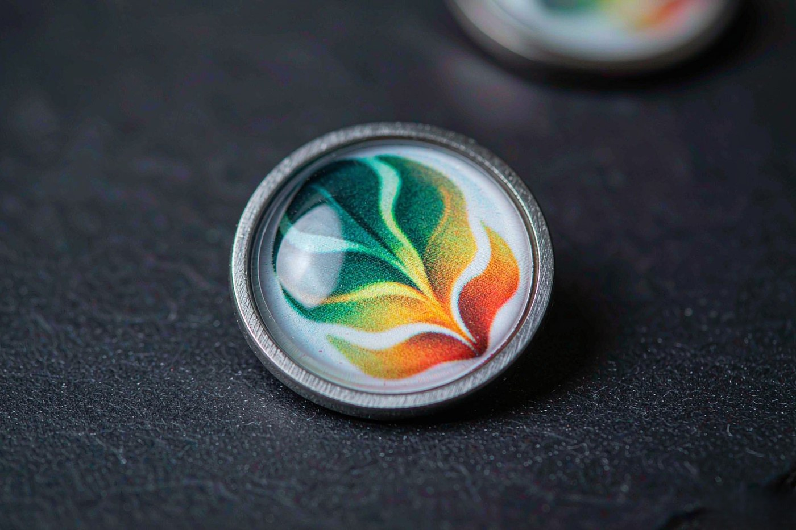
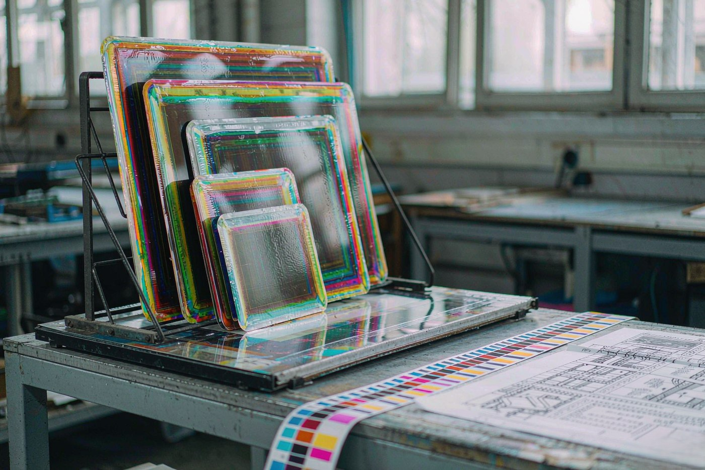
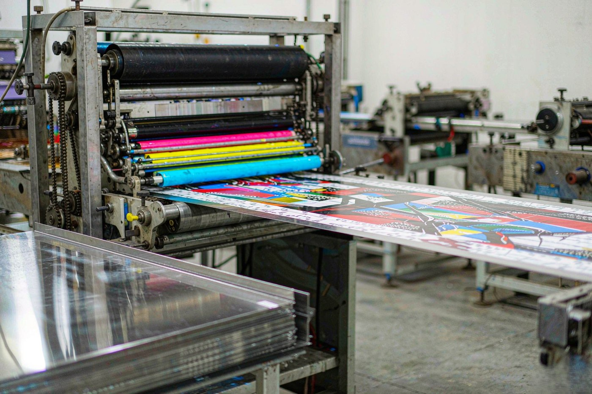

Most badges are made by stamping a thin sheet of metal and then filling the recessed areas with enamel. It is an efficient way to make a flat, coloured pin, and it covers most orders. But the whole method rests on one assumption: that colour arrives as a solid, matched-to-Pantone liquid that can be poured into a cavity and ground flat.
That assumption does not survive contact with certain artwork. A gradient across a colour area cannot be filled in one go, because enamel does not blend. A photograph cannot be poured at all. A design with more colours than a Pantone set can name has nowhere to put them. For those pieces the answer is not a better enamel job, it is a different process entirely: offset printing.
This is what changes when you order offset printed lapel pins: the artwork arrives as artwork rather than as a shape to be cut, the colour count stops being a constraint, and the lead time drops to the shortest we run. It is also the process where the artwork you supply is the artwork that appears on the metal, which makes it worth understanding before you order.

What offset printing actually is
The short version: the artwork is printed onto the piece rather than formed into it. A stainless steel or brass blank is laser cut to the outline of your design, printed by offset lithography in full colour CMYK, and then sealed under a clear, non-yellowing epoxy dome. The face is flat. The depth you see in a photograph of a printed pin is the dome, not the metal.
Two things follow from that, and they run through everything below. First, there is no steel mould. Unlike the four other processes we run, offset printing cuts no CNC steel tooling; a print plate is prepared per design and that is the whole of it. Second, the artwork is limited by print resolution rather than by the metal, which is the opposite of every stamped process, where the line width limit comes from the material. The process comparison sets the five processes side by side, and the offset printed section of the product page carries the full specification.
| Base metal | Stainless steel or brass blank |
| Print process | Offset lithography, full colour CMYK |
| Cover | Clear epoxy dome, non-yellowing |
| Tooling | None. A print plate is prepared per design |
| Lead time | 5 to 7 business days, the shortest option we run |
| Best for | Artwork with gradients, photography or many colours |
Gradients, photography and colour
This is the reason the process exists, so it is worth being precise about what enamel cannot do. Enamel is a solid, matched-to-Pantone liquid. It does not blend, because a blend would have to be a third colour that matched no Pantone reference. A gradient across a colour area therefore has to be resolved into discrete bands, and on a pin small enough to wear, those bands either show visible steps or disappear into each other completely. Neither outcome is a rendering problem you can solve by sending a better file.
A photograph is the harder case. On a 25 mm pin, roughly an inch across, a face or a fine texture has very little area to work with, and it loses its identity long before the press does anything to it. The honest advice for a photographic pin is to simplify toward a shape or a silhouette rather than to increase the resolution of the file, which the artwork guide sets out in more detail.
Colour count follows from the same argument. Hard enamel carries up to four Pantone references and soft enamel up to six, both matched within one Pantone step on a calibrated line. Offset printing carries no such cap: it runs full colour CMYK with unlimited references, and its accuracy is judged as a print proof against your own file rather than as a distance from a Pantone chip. If your brand guide works in Pantone, that is fine, but if your artwork comes from a photograph or a printed piece, matching to Pantone is not the exercise you are doing.

The dome, the edge and durability
The epoxy dome is what makes a printed piece wearable, and it is also where the honest limitations sit. The dome is clear and non-yellowing, so the artwork underneath stays readable over time rather than hazing. It also protects the print from the kind of handling a lapel pin actually gets.
What the dome does not do is make the piece solid metal. The edge of a printed pin is a printed surface, not a machined one, so it wears differently from a die struck pin where every part of the piece is solid brass, bronze or iron. The comparison page records the durability of the five processes in one line each, and the printed entry says plainly that the dome protects the print but the edge is a printed surface.
That is not a reason to avoid the process. It is a reason to know which one you are ordering. A printed pin for a conference, a client gift or a short-run campaign has no durability question at all. A printed pin that will be worn daily for five years on a uniform is a different question, and there the all-metal die struck process is the better answer.
Size, metal and backing
Printed pins sit in the same size band as the rest of our pin range, 14 mm to 60 mm in diameter, which is 0.55 in to 2.36 in. The base metal is a stainless steel or brass blank. Brass sheet is 0.3 mm, and stainless steel is the thicker of the two at 0.4 mm, so a printed stainless steel blank has more body behind the print than a brass one.
The backing follows the piece rather than the artwork. Butterfly clutch is the standard across our range, and we also do safety pin, screw back and magnet. For lightweight printed pieces specifically, a flat pin or a safety pin is the usual choice, because a printed pin with a dome is heavier at the front than a flat stamped one and a heavy pin on a lightweight sheet can work its way through the cloth of a lapel. The backings page sets out the full range.
| Process | Colour | Gradients and photos | Tooling |
|---|---|---|---|
| Hard enamel | Up to 4 Pantone references | Solid fills only | CNC steel mould, archived three years |
| Soft enamel | Up to 6 Pantone references | Solid fills only | CNC steel mould, archived three years |
| Die struck | None. Contrast comes from the metal itself | Not applicable | Steel stamping die to 200 tonnes |
| 3D die cast | Painted after casting, solid colours | Solid fills only | Two-part casting mould |
| Offset printed | Full colour CMYK, unlimited references | Full colour, gradients and photography | None. A print plate per design |
Tooling, lead time and repeat orders
No steel mould is the headline, and it is why offset printed carries the shortest lead time of the five processes we run: five to seven business days. Every other process cuts a CNC steel mould in our own tooling shop before production can start. A printed piece skips that stage entirely. For a deadline that is fixed, this is often the deciding factor on its own.
There is a second-order effect worth planning for. Because the tooling is a print plate prepared per design rather than a mould held in the archive, a change to the artwork means a new plate. On the four stamped processes, a repeat order of the same design reuses the archived mould and moves straight to production. On a printed piece, the same order of the same design still needs its plate prepared, so the speed advantage narrows on genuinely repeat business.
That is worth weighing against the other side of the ledger. For a short run, a campaign or a deadline, offset printing gives you the artwork you asked for with no tooling commitment. For a long-running programme with a settled design, an enamel or die struck piece carries its tooling amortised across the volume and can work out better over many repetitions. The cost factors guide covers what each element of a quotation contributes.

When to choose something else
Three questions will usually settle the process, and they are worth answering before you send artwork rather than after. The 3D die cast guide and the enamel comparison cover the alternatives in full.
- Does the design need depth that goes back into the metal, an internal cutout, or a part that moves? Then it is 3D die cast. Printing is flat, and a stamping die cannot produce a hinge or a spinner either.
- Will it be handled hard, and does it need to be all metal? Then it is die struck: solid brass, bronze or iron between 1.0 mm and 1.5 mm, with relief formed by a 200 tonne press and nothing to chip or crack.
- Do you need a crisp raised metal line and up to four Pantone references? Then it is hard enamel, lapped flat on a stone. For a brighter, glossier fill and up to six references, soft enamel.
If your artwork is a photograph, a gradient, or a piece of artwork with more colour in it than a Pantone set can name, then none of those apply and offset printed is the answer. Send the file, the quantity and the date it has to be on, and we will tell you what we would use.
Offset printed questions answered
A metal blank is laser cut to shape, printed by offset lithography in full colour CMYK, and sealed under a clear epoxy dome. No steel mould is cut, because the artwork is printed onto the face rather than formed into it. The base metal is a stainless steel or brass blank, and the piece is flat under the dome.
Yes, and offset printed is the only process of the five we run that can hold one. Enamel is a solid, matched-to-Pantone liquid material and it does not blend, so a gradient across a colour area has to be resolved into discrete bands. On a pin small enough to wear, those bands either show visible steps or disappear entirely.
As many as the artwork needs. Offset printing runs full colour CMYK with unlimited references, and the colour accuracy is a print proof against your own file rather than a match to a Pantone step. The other processes are capped: hard enamel at up to four Pantone references, soft enamel at up to six.
No steel mould. A print plate is prepared per design, so there is no CNC steel tooling and no mould to archive. That is why offset printed is the shortest lead time of the five processes we run, at five to seven business days.
Good, with one honest caveat. The clear epoxy dome protects the print against handling, but the edge of the piece is a printed surface rather than solid metal, so it wears differently from an all-metal die struck pin. If the piece will be handled hard and nothing may chip, die struck is the more durable choice.
No. A printed piece is flat under the dome, and neither an internal cutout nor a spinner, slider or hinge can be produced by printing onto a blank. A design that needs depth that goes back into the metal is a 3D die cast piece.
300 dpi at the final print size, or higher. On a 25 mm pin that means an image of roughly 300 pixels across to print cleanly, and we would rather have 600. Simple artwork in a large size is forgiving; photographic detail in a small size is not, whatever the resolution of the file.